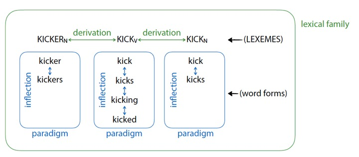
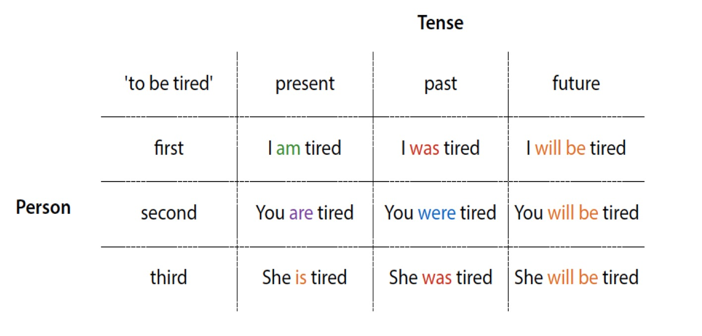
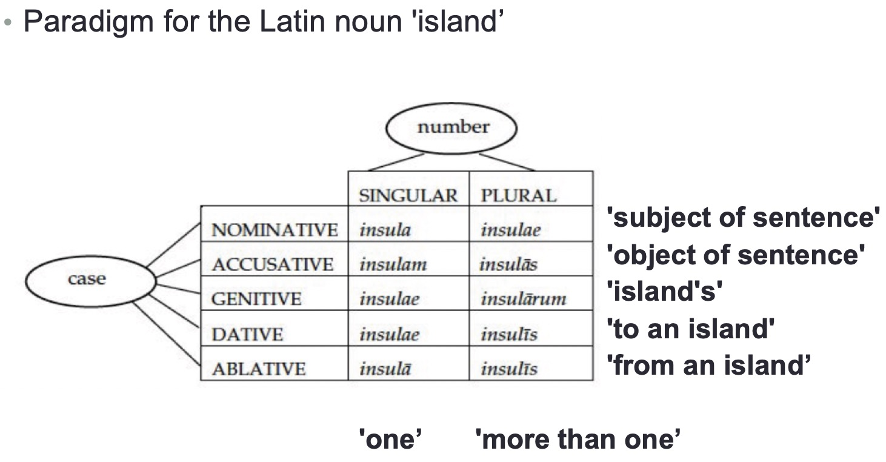
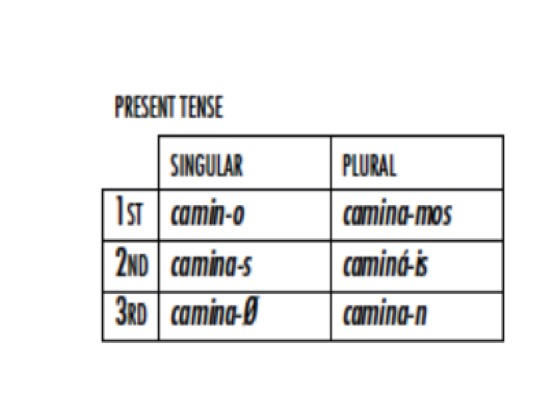
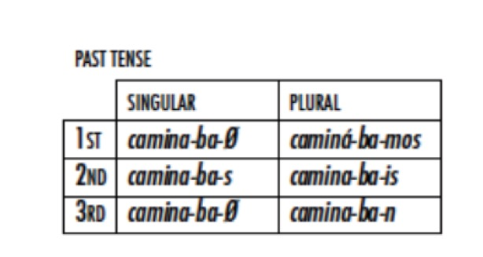
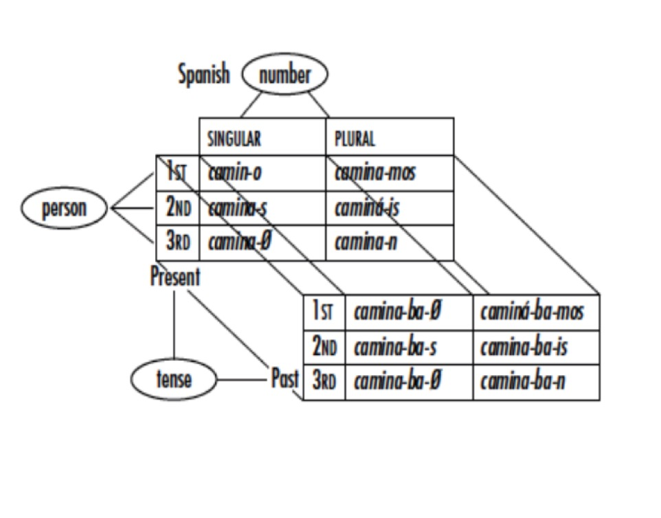

Inflection Review
Paradigms for Analysis
What does inflection usually do to nouns?
A morphological process which changes the meaning of a lexeme in a given linguistic or grammatical context
Derivation creates ‘new words’
Inflection produces new word forms relevant to a given linguistic context
Derivation creates new words to put into inflectional paradigms
Inflection creates paradigms from a given word



| Singular | Plural | |
|---|---|---|
| 1st | I | we |
| 2nd | you | y’all |
| 3rd | he/she | they |
| Singular | Plural | |
|---|---|---|
| 1st | Yo | Nosotros |
| 2nd | Tu/Usted | Vosotros/Ustedes |
| 3rd | El/Ella | Ellos/Ellas |
Determine the dimensions of meaning
Create a ‘grid’ which has slots for each possible form
Fill in the forms!
Present vs. Past
1st vs. 2nd vs. 3rd person
Singular vs. Plural



‘Verb classes’ or ‘Inflectional classes’ are common
Sometimes, part of the description is discussing the paradigms, and then labeling words by inflection class
| ‘go’ class |
‘read’ class |
‘talk’ class | |
|---|---|---|---|
| 1sg | à- | gyàt- |
yã- |
| 2sg | èm- | bátk- | gyát- |
| 3sg | ø | gyá- | án- |
If there are paradigms in a dataset, start hunting down elements!
It’s a great way to organize your thoughts
… and a great way to present them!
Any dimension can be put into a paradigm
Some languages have an additional contrast in the person paradigm
‘Inclusive we’: “Myself and you (and perhaps others)”
‘Exclusive we’: “Myself and others, but not you.”
Inflectional markings give us information which helps interpret the sentences
Inflectional meanings vary by sentential context
Inflectional meanings are often relevant to syntax
The same sorts of inflectional meanings show up over and over again!
Number
Gender and Noun Class
Case Marking
Other nominal markings
Often Singular (unmarked) vs. Plural (marked)
Sometimes collective (unmarked) vs. singulative (marked)
Sometimes you’ll see ‘dual’ forms, or other number-based forms
Grouping words into multiple genres, and using different forms and “agreements” for each
We call it “Grammatical Gender” when masculine/feminine are used, “Noun class” when there are other categories
Un homme parfait - ‘a perfect man’ (masculine)
Une femme parfaite - ‘a perfect woman’ (feminine)
Un appartement parfait - ‘a perfect apartment’ (masculine)
Une tondeuse parfaite - ‘a perfect lawnmower’ (feminine)
When words or forms change to “match” a characteristic of another part of the sentence
Um gato preto - ‘a black cat’ (masculine)
Uma gata preta - ‘a black cat’ (feminine)
Um garfo prateado - ‘a silver fork’ (masculine)
Uma colher prateada - ‘a silver spoon’ (feminine)
красивый дом (Krasiviy dom) - ‘Pretty house’ (masculine)
красивая девушка (Krasivaya devushka) - ‘Pretty girl’ (feminine)
красивое море (Krasivoye Morye) - ‘Pretty sea’ (neuter)
Often based on the form of the word, rather than the meaning
Usually “masculine” and “feminine”, but there’s also “neuter”
Other words (adjectives, verbs, articles) change to “agree” with the gender
It’s not always about Gender at all…
Marks gender based on animacy or “alive-ness”
Used in Basque, English (he/she/it), Totonac, Navajo, Tamil, PIE (??), and more!
In Navajo: Human > Infant/Big Animal > Medium-sized Animal > Small Animal > Natural Force > Abstraction
More than just a few categories
Often semantically linked
Sometimes phonologically linked
Sometimes completely arbitrary
(and so on)
| 1. animate objects, men 2. women, water, fire, violence 3. edible fruit and vegetables 4. miscellaneous (includes things not classifiable in the first three) |

~45% of languages have gender or noun classes (according to WALS)
~75% of gender-using languages use sex-based Gender
Diminuitive and Augmentative affixes
Gato -> Gatito in Spanish
Perro -> Perrazo
Determiners and possessives can attach as affixes
Proper noun markers (e.g. in Basque)
… but number and gender are really common!
Paradigms are everywhere, and they’re a useful tool
Inflectional morphology is often used to mark sentential context
Nouns often are inflected for number and gender